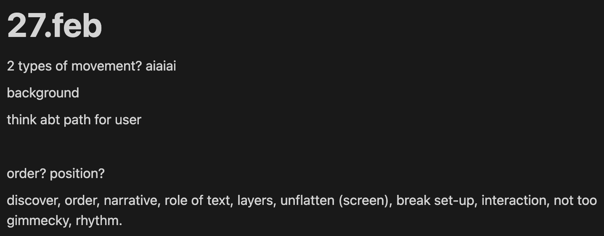
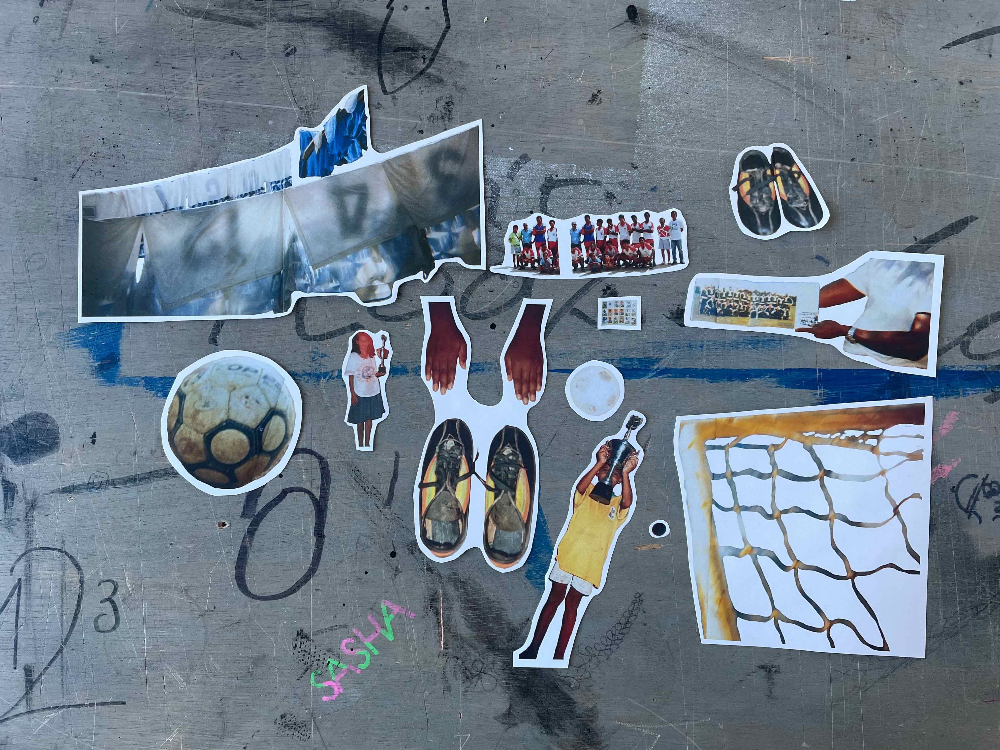
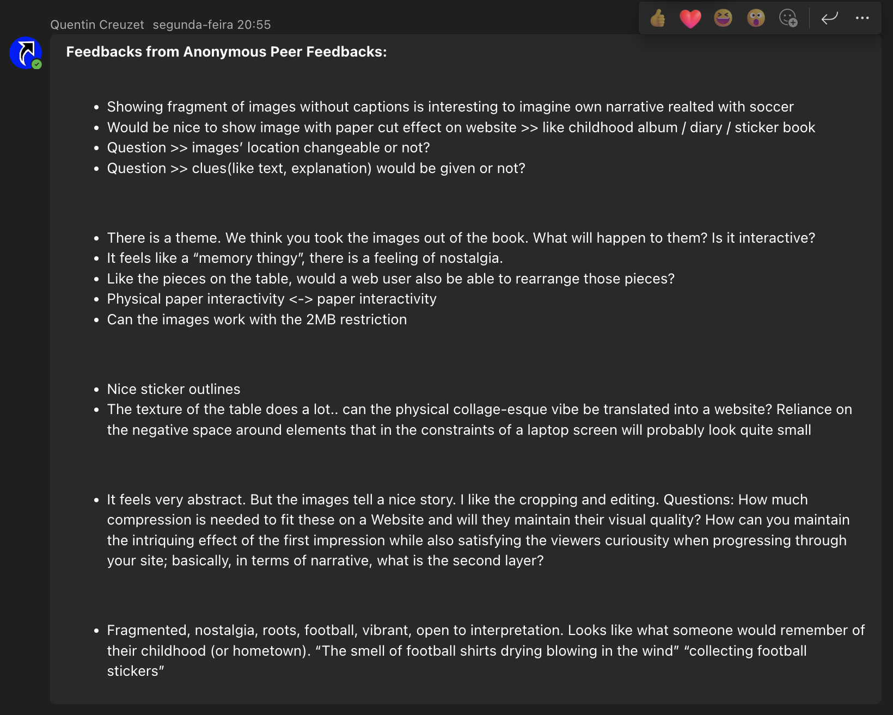

For in-class presentations or feedback talks, I feel a lot of pressure to show something “good” that already makes sense and looks great. The feeling that I’m supposed to have it all figured out from the start and that at a feedback group talk I’m supposed to “perform”. This pressure can be really constructive, but in the early stages of a project it makes me too critical about my own ideas when they're still quite general.
This is what my brainstorming can look like:

The longer I’ve been at the KABK the more I’ve become used to dealing with this: taking other’s feedback seriously, but also keep a certain distance between my ideas and interests and others’ opinions. For this effect, I’ve been enjoying thinking of in-class presentations and moments of feedback as experiments. Less “what do they think of my project”. Instead, taking an almost scientific approach to analysing a third party’s reaction to my work. More “what can I learn about how others interact with what I’ve made?”
Here's one of my experiments and the feedback I got from it:
 